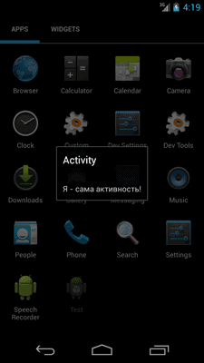

/* Моя кошка замечательно разбирается в программировании. Стоит мне объяснить проблему ей - и все становится ясно. */
John Robbins, Debugging Applications, Microsoft Press, 2000

/* Моя кошка замечательно разбирается в программировании. Стоит мне объяснить проблему ей - и все становится ясно. */
John Robbins, Debugging Applications, Microsoft Press, 2000
Что такое Activity
Методы
Активность в виде диалогового окна
Програмнное создание активности
Классы Activity в Android
Термин Activity еще не устоялся в русском языке у разработчиков. Некоторые используют слово Активность, другие - Деятельность. Чтобы не путаться в названиях, я буду использовать термин Активность (смотри примечание).
Разработчики со стажем могут воспринимать Активность как форму. Простые приложения состоят из одной активности. Более сложные приложения могут иметь несколько окон, т.е. они состоят из нескольких активностей, которыми надо уметь управлять и которые могут взаимодействовать между собой.
Активность, которая запускается первой, считается главной. Из нее можно запустить другую активность. Причем не только ту, которая относится к нашему приложению, но и другого приложения. Пользователю будет казаться, что все запускаемые им активности являются частями одного приложения, хотя на самом деле они могут быть определены в разных приложениях и работают в разных процессах. Попробуйте воспринимать активности как страницы разных сайтов, открываемых в браузерах по ссылке.
Обычно активность занимает весь экран устройства, но это не является обязательным требованием. Вы можете создавать полупрозрачные и плавающие окна активностей. И с развитием Android такой подход набирает обороты.
Чтобы создать активность, нужно унаследоваться от класса Activity и вызвать метод onCreate(). В результате мы получим пустой экран. Толку от такого экрана никакого. Поэтому в активность добавляют компоненты, фрагменты с помощью разметки.
Активность имеет жизненный цикл — начало, когда Android создает экземпляр активности, промежуточное состояние, и конец, когда экземпляр уничтожается системой и освобождает ресурсы. Активность может находиться в трех состояниях:
Если активность, которая была уничтожена системой, нужно снова показать на экране, она должна быть полностью перезапущена и восстановлена в своем предыдущем состоянии.
Подробнее о жизненном цикле читайте в отдельной статье.
Помните, изучая темы, мы создали вторую активность в виде диалогового окна. С таким же успехом вы можете создать окно и для основной активности. Добавим в манифесте для активности строчку:
<activity
android:name="ru.alexanderklimov.test.MainActivity"
android:label="@string/App_name"
android:theme="@android:style/Theme.Dialog" >
Напишем код для запуска:
@Override
public void onCreate(Bundle savedInstanceState) {
super.onCreate(savedInstanceState);
setTitle("Activity");
TextView tv = new TextView(this);
tv.setText("Я - сама активность!");
tv.setPadding(20, 20, 20, 20);
setContentView(tv);
}
Обратите внимание, что в данном примере мы не используем разметку, а программно создаём экземпляр класса TextView с необходимыми свойствами (текст, отступы) и передаём его в метод setContentView().

В основном мы пользуемся XML-разметкой для формирования внешнего вида активности. Это рекомендованный способ и в 99% вы будете использовать именно его. Но в некоторых случаях возможно вам понадобится создать активность программно. Сложного там ничего нет, для общего развития пригодится.
Если в стандартном случае мы подключаем XML-файл в методе setContentView(R.layout.activity_main), то при программном создании данный метод нам не понадобится. Удаляем его и пишем код:
package ru.alexanderklimov.test;
import android.app.Activity;
import android.content.Context;
import android.content.Intent;
import android.os.Bundle;
import android.view.View;
import android.view.View.OnClickListener;
import android.widget.ImageView;
import android.widget.LinearLayout;
import android.widget.LinearLayout.LayoutParams;
import android.widget.TextView;
import android.widget.Toast;
public class TestActivity extends Activity {
/** Called when the activity is first created. */
@Override
public void onCreate(Bundle savedInstanceState) {
super.onCreate(savedInstanceState);
// этот метод нам не нужен
// setContentView(R.layout.activity_test);
LinearLayout layout = new LinearLayout(TestActivity.this);
layout.setId(R.id.layout_id);
LayoutParams layoutParams = new LayoutParams(LayoutParams.MATCH_PARENT,
LayoutParams.MATCH_PARENT);
layout.setLayoutParams(layoutParams);
layout.setOrientation(LinearLayout.VERTICAL);
ImageView imageView = new ImageView(TestActivity.this);
imageView.setId(R.id.image_id);
imageView.setImageResource(R.drawable.ic_launcher);
LayoutParams imageViewLayoutParams = new LayoutParams(
LayoutParams.WRAP_CONTENT, LayoutParams.WRAP_CONTENT);
imageView.setLayoutParams(imageViewLayoutParams);
layout.addView(imageView);
setContentView(layout);
layout.setOnClickListener(onViewClickListener);
imageView.setOnClickListener(onViewClickListener);
}
OnClickListener onViewClickListener = new OnClickListener() {
@Override
public void onClick(View v) {
int myId = v.getId();
Toast.makeText(TestActivity.this,
"ID: " + String.valueOf(myId) + " clicked",
Toast.LENGTH_LONG).show();
}
};
}
Принцип формирования следующий - создаем объект LinearLayout (или другой контейнер) и настраиваем необходимые свойства. Далее создаём необходимые дочерние элементы и также настраиваем их свойства. Не забываем подключить дочерний элемент к родительскому через метод addView().
В данном примере мы также присваиваем компонентам идентификаторы через метод setId(), хотя необходимости в этом не было. В примере эта возможность показана для демонстрации. Если вы используете идентификаторы, то в файле res/values/stings.xml добавьте строчки:
<item type="id" name="layout_id"/>
<item type="id" name="image_id" />
Обычно опытные программисты создают отдельный файл для идентификаторов, например, res/values/ids.xml.
Android SDK включает набор классов, наследованных от Activity. Они предназначены для упрощения работы с виджетами, которые часто встречаются в обычном пользовательском интерфейсе. Перечислим некоторые из них (наиболее полезные).